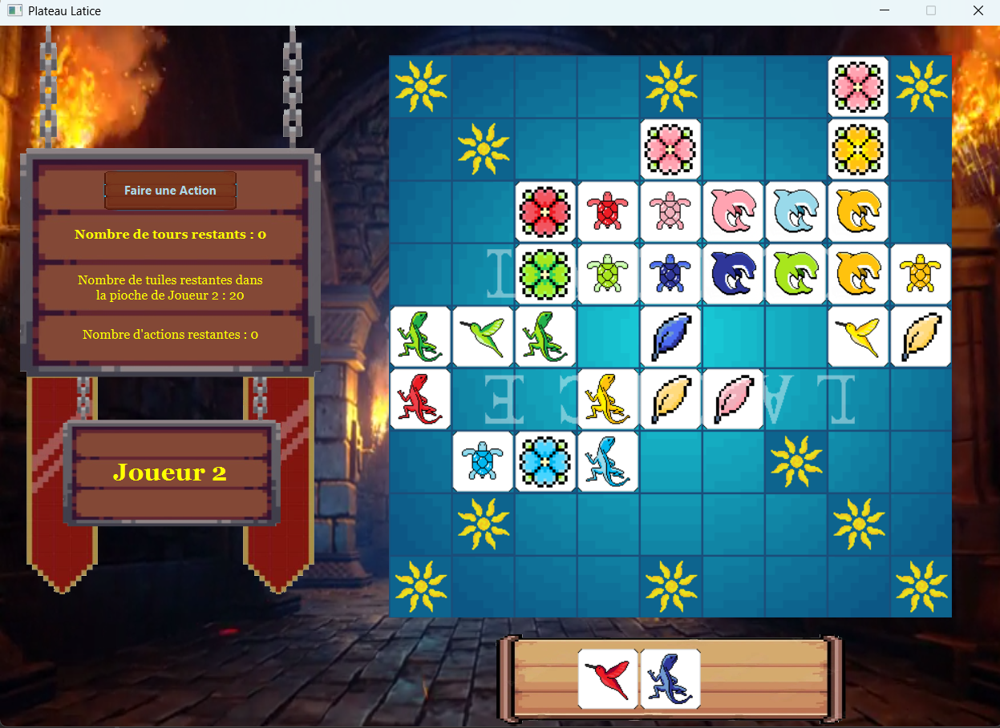
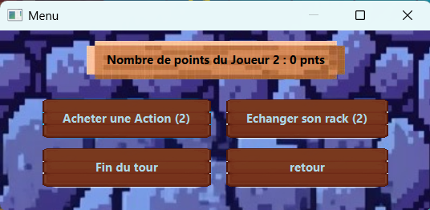
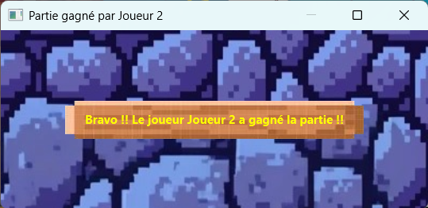

Latice
Jeu de plateau en JavaFX
Reproduction du jeu de plateau Latice avec une interface JavaFX complète, des sons et un fond animé.

Contexte
Projet réalisé dans le cadre d'une SAE de 1ʳᵉ année du BUT Informatique. Objectif : recréer le jeu de plateau Latice en Java et JavaFX, avec une interface jouable.
Objectifs
- Reproduire fidèlement les mécaniques du jeu Latice.
- Développer une interface graphique complète en JavaFX.
- Gérer les interactions, les animations et les règles de score.
- Proposer une expérience utilisateur fluide.
Mon rôle
Dans une équipe de 3 personnes, j'ai été responsable de :
- la création complète de l'interface JavaFX ;
- la gestion des événements utilisateurs ;
- l'intégration des sons (achats, victoire, musique) ;
- la mise en place du fond animé ;
- la synchronisation entre la logique et l'affichage.
Fonctionnalités
Système de points
- Case soleil : +2 points
- Double : +1 point
- Triple : +2 points
- Latice : +3 points
Actions possibles
- Acheter une action
- Échanger son rack
- Passer son tour
- Ouvrir / fermer le menu des actions
Ambiance
- Musique dynamique qui évolue pendant la partie.
- Vidéo de fond animée en boucle.



Livrables
- Interface JavaFX complète
- Gestion des règles et du score
- Intégration audio et vidéo
- Code source commenté
Analyse réflexive
Ce projet m'a permis de comprendre la structure d'une application JavaFX et l'importance de séparer la logique et l'affichage. La synchronisation entre les actions, les règles et l'interface a été la principale difficulté. J'ai aussi appris à intégrer des sons et des vidéos de manière performante et à garder un code propre en équipe.
Pour les enseignants
Synthèse des compétences du BUT Informatique et des apprentissages critiques (AC) mobilisés dans ce projet.
Compétences mobilisées
-
C1 — Réaliser un développement d'application
Java, JavaFX, gestion des événements.
-
C2 — Optimiser des applications
Organisation du code, gestion des ressources.
-
C5 — Conduire un projet
Répartition des tâches, respect des délais.
-
C6 — Collaborer au sein d'une équipe
Travail en équipe, Git.
Apprentissages critiques démontrés
| AC | Apprentissage critique | Compétence | Niveau | Ce que le projet démontre |
|---|---|---|---|---|
| AC11.01 | Implémenter des conceptions simples | C1 | BUT 1 | Logique du jeu. |
| AC11.02 | Élaborer des conceptions simples | C1 | BUT 1 | Organisation du projet. |
| AC11.03 | Tester et évaluer les résultats | C1 | BUT 1 | Tests des règles et des interactions. |
| AC11.04 | Développer des interfaces utilisateurs | C1 | BUT 1 | Interface JavaFX. |
| AC21.03 | Adopter de bonnes pratiques | C1 | BUT 2 | Structure du code, gestion des événements. |
| AC15.02 | Utiliser des outils de gestion | C5 | BUT 1 | Répartition des tâches et suivi des délais. |
| AC16.04 | Travailler en équipe | C6 | BUT 1 | Travail à trois sur le même projet. |
| AC26.03 | Collaborer efficacement | C6 | BUT 2 | Coordination avec Git. |
Traces disponibles
- Analyse réflexive — retour sur les difficultés et les apprentissages du projet.
- Code source sur GitHub ↗
- Captures d'écran et description des fonctionnalités dans les sections ci-dessus.
- Tableau récapitulatif de tous les AC du portfolio